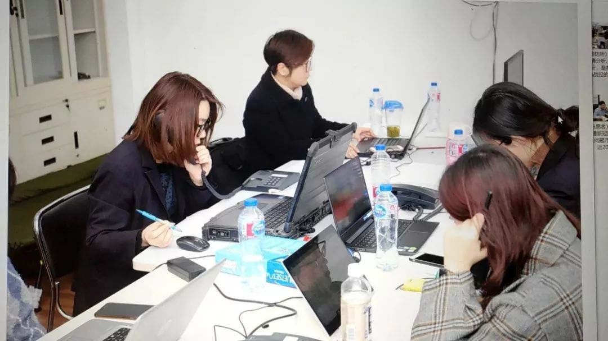
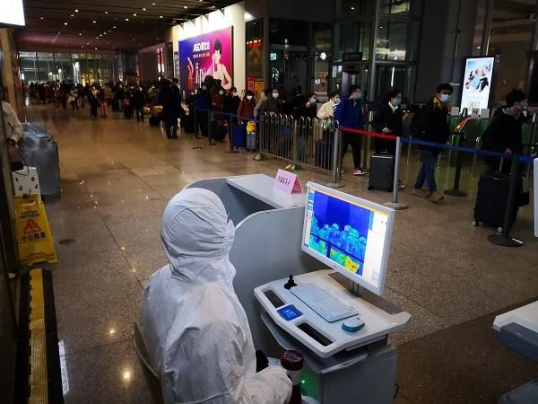

鄂外重灾区：国内多地重点管控“温州返回人员”
原文链接 备份链接 *************▲*************2020年1月31日，温州某商业街，店铺都关闭了。（南方周末记者 王华震/图） 全文共*3424*字，阅读大约需要8分钟。 截至2月4日12点，温州确诊新冠肺炎 …
她反复确认我们工作人员的身份，就是不提供自己的信息，打了几次后来就不接了。
口述 | 郭翔
整理 | 王仲昀
我是上海市疾控中心的一名工作人员，原来在免疫规划所工作。新冠肺炎暴发后，中心成立了“追踪办”，我和另外23位同事从其他部门被紧急抽调过来。

国家卫健委此前发布《新型冠状病毒感染的肺炎防控方案》， 对“密切接触者”这一群体有了明确的管理方案，我们的“追踪办”就是为了落实这个方案。
虽然有很多密切接触者可以通过对病例的流行病学调查直接问询，但对于同乘交通工具，特别是飞机、铁路旅客列车、客运汽车、客运轮船这些大型交通工具的密切接触者，就需要“追踪办”来找人，及早排查确认落实防控措施。
做好“密切接触者”的防控，是当前有效控制疫情扩散非常重要的一环。

我所在的上海市疾控中心“追踪办”目前设有三组，每组八个人。我们工作组成立于1月26日，经过一天的紧急培训后于1月27日正式工作。
既然是“追踪办”，那么重点肯定在于“追踪”。我们要做的，并不是去确定谁是“密切接触者”，也不是挨家挨户地去找这些“密切接触者”。我们的角色，是“密切接触者”的管理环节中的“桥梁”。
当前应对疫情，强调“联防联控”。流行病学调查人员收集确诊病例的经历之后，再筛选出发病后乘坐交通工具（飞机、火车、客运汽车与轮船）的对象及其乘坐的航班号或车次信息，并将其中需要排查的航班号或车次信息告诉我们。
得到信息后，我们提请公安部门根据旅客实名登记信息将同天同乘该航班号或车次的人员检索出来，然后通过大数据，尽可能查找到这些密切接触者的联系方式。我们根据公安反馈的个人信息，准确地找到他们，并和他们取得联系。
对于“密切接触者”的管理，首先最重要的也是统一的原则，是让他们每个人居家隔离14天。
从我们得到的信息来看，有些人并不是住在上海的，他可能只是经过上海时和病人同乘坐交通工具。对于已经去往外地的“密切接触者”，我们会给他目前所在地的省级疾控中心发函，并提供协查对象的信息，要求他们进行后续的追踪管理。同样地，我们也会收到其他省市疾控中心的来函，因为有些“密切接触者”经过当地的排查发现目前在沪。
至于上海本地的“密切接触者”，我们在和他们联系之后，首先比对公安提供的住址信息与他们进行核验，在进行必要的告知后，及时把他们的信息通过各区疾控中心给到对应街道（镇）。
现在密切接触者管理都是网格化管理，我们要做的是告诉这些群众他们是“密切接触者”，务必做到居家或集中医学观察。而具体的医学观察措施，包括每日两次体温测量，这些都是由他所在街道（镇）去落实。
我们“追踪办”的工作，主要依靠打电话完成，看上去好像没什么难度，但实际上也不简单。
我们和每一个“密切接触者”取得联系后，确认信息是首要任务，然后按照规定对他们进行政策告知，表明身份与利害分析取得对方信任理解，消除因为可能接触病例造成的心理紧张，还要消除他们对后续14天医学观察的抵触情绪，既要舒缓对方焦虑紧张的心情，还要给到一些自我健康观察的建议。
这样交流下来，如果联系对象配合的话，一个电话一般5分钟左右。
但并非所有交流都能很顺畅。如果第一次打电话联系不到人，我们会间隔一段时间再继续拨打电话，这样一天有可能从早联系到晚，但最终还是无人接听；还有时候好不容易联系上了，话没说两句就被对方挂电话；有时候对方扔下一句“请不要骚扰我”，然后就被拉黑。
记得有次联系一位女士，她反复确认我们工作人员的身份，就是不提供自己的信息，打了几次后来就不接了。后来在拨打另一个密切接触者时发现原来是一家人，那位女士再接电话时说，之前担心是骚扰电话。
还有几次碰到几位年纪大点的阿姨，接到我们的告知电话后反复要求我们工作人员不要通知街道，怕被邻居知道自己是密切接触者。这样的心情我们理解，但政策与规定在那里，疫情当前我们必须服从大局，我们要反反复复地解释。
林林总总，各种情绪都碰到过。
但是我们在拨打下一个号码前，都会平复心情，以平和舒缓的语气开始下一段通话。
这些天从早忙到晚，有几次一直忙到凌晨才结束。工作组成立之初，每天8个人至少要打五六百个电话。这几天工作量有所减少，每天也有差不多二三百个电话。现在返沪高峰来了，如果疫情仍持续，预计后续我们的工作量又会变大。

虹桥站对到达旅客逐个进行测温
其实，在我们工作过程中，大多数公众在被我们通知时都表示理解，这令人欣慰。有联系的对象主动说：我乘飞机回上海就把自己关在家里，尽量把传播风险降低，这是我的社会责任。每每听到这样的话，我们真心为广大的市民点赞，其实只要每个人都履行好自己的社会责任、防病义务，按照政府和专家的防控建议切实做到位了，我相信我们很快就能战胜当前的疫情。
最后，还是很感谢每一位被我们追踪办“骚扰”的市民，谢谢你们的接听电话，谢谢你们的理解与配合。我们的初心与使命就是保护城市公共卫生，我们来自你们，是你们中的一员。公共卫生不就是让每个小家融合成为大家，大家做好了，小家自然安康幸福。
什么叫“密切接触者”
国家卫健委发布《新型冠状病毒感染的肺炎防控方案》中，卫健委提出对疫情蔓延过程中与病例产生关联的“密切接触者”的管理细则。目前最新发布的第三版防控方案中，对于密切接触者有如下界定：
1
与病例接触但未采取有效防护者，如：共同居住、学习、工作，或其他有密切接触的人员，如近距离工作或共用同一教室或与病例在同一所房屋中生活。
2
诊疗、护理、探视病例的医护人员、家属或其他有类似近距离接触的人员，如到密闭环境中探视病人或停留，同病室的其他患者及其陪护人员。
3
乘坐同一交通工具并有近距离接触人员，包括在交通工具上照料护理过病人的人员、同行人员（家人、同事、朋友等）、或经调查评估后发现有可能近距离接触病例和感染者的其他乘客和乘务人员。
4
现场调查人员调查后经评估认为符合其他与密切接触者接触的人员。
征集令
《新民周刊》现面向全国征集新冠肺炎采访对象和真实故事：
如果你是参与抗击新冠肺炎疫情的医护人员或其家属，我们希望聆听你的“战疫”故事，也希望传达你的诉求。
如果你是确诊、疑似患者本人或家属，我们希望了解你和家人如何“抗疫”的过程，让外界了解你的真实经历。
如果你是疫情严重地区的普通市民，我们希望展现你的乐观，并倾听你所需的帮助。
如果你是公共服务人员或各类捐助者，我们希望看到你的“最美逆行”，记录下你的无私。
……
抗击新冠肺炎疫情，我们诚征对疫情了解的社会各界人士，提供相关线索，说出你的故事，让我们用新闻留存这一切。
《新民周刊》新冠肺炎线索征集值班编辑联系方式（添加时请简要自我介绍）：
周一：应 琛 微信号：paulineying0127
周二：金 姬 微信号：gepetta
周三：黄 祺 微信号：wxid_bf5mudid7oz322
周四：周 洁 微信号：asyouasyou
周五：孔冰欣 微信号：kbx875055141
周六：吴 雪 微信号：shyshine1105
周日：姜浩峰 微信号：jianggeladandong
新闻是历史的底稿，你们是历史的见证者。期待你的故事、你的线索！

▼
大家还都在看这些
▼
转载请在评论区留言，获得授权！
转载时，须注明作者、出处和微信号


原文链接 备份链接 *************▲*************2020年1月31日，温州某商业街，店铺都关闭了。（南方周末记者 王华震/图） 全文共*3424*字，阅读大约需要8分钟。 截至2月4日12点，温州确诊新冠肺炎 …
原文链接 备份链接 记者 | 童兰 截至2月3日24时，新型冠状病毒肺炎疫情目前已经导致了425人死亡和20438例确诊感染，而且仍在不断攀升。作为最易感染的人群之一，密切接触者追踪力度的加强和人数的增长，暗示了未来感染人数增加的压力。 …
原文链接 备份链接 1月30日，曾患新型冠状病毒感染的肺炎的北京大学第一医院呼吸和危重症医学科主任王广发在北京地坛医院治愈出院。他是北京市第5名治愈出院的新型冠状病毒感染的肺炎患者。新华社发（任超 摄） 采访·整理 秦珍子 编辑 张国 国 …
原文链接 备份链接 02.02.2020本文字数：3224，阅读时长大约5.5分钟 导读：病毒传播路径的信息，为何在病毒全面开花扩散之后，源源不断地发表在论文上。 作者 | 第一财经 马晓华 从新型冠状病毒开始踏足武汉，到蔓延至全国甚至 …
原文链接 备份链接 非常时期，武汉成了全国人民挂念、祈福的城市。封城后，武汉人民的真实生活是什么样？ 正和岛自1月26日起特别推出《叶青：我在武汉疫区的第N天》专栏。叶青是一位定居武汉40年的市民，也是一名学者和官员。接下来的一段时间，他 …